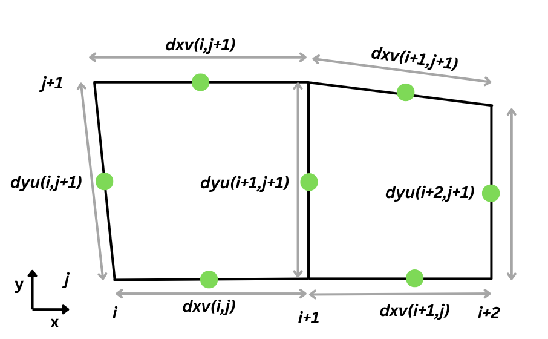
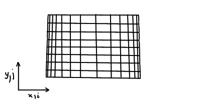

In this section, we show how grid setup is carried out for TRACMASS and will show how to transform data from typically used grids in climate modeling to the Arakawa C-grid. It is essential to set up the grid correctly, thus great care needs to be taken. Furthermore, the grid setup can be carried out with two files: setup_grid.F90 and read_field.F90. This is necessary if there are time variations in the sea surface height/pressure, which affect the depth of the cells.
There are many local and global climate models available, which makes it challenging to provide a comprehensive guide on how to set up the grid data for all possible cases. Hopefully, the information presented in this chapter will give some clarity and, if not, feel free to check discussions on Github — maybe someone has had the same problem or someone can help you out!
TRACMASS grid
TRACMASS is built on the "staggered" Arakawa C-grid, which keeps the tracer values (such as
temperature,
salinity, oxygen concentration) in the center of the grid cell, while the velocity values are located
at the center of each grid face. For example, the east-west (u) velocity field
components are located at the center of the left-right faces, while the north-south
(v)
components
are at the center of the forward-backward grid faces. An illustration in 3D of the "staggered" Arakawa
C-grid is
shown below.

The algorithm for setting up the grid is located in the project folder in the setup_grid.F90 file. The example projects present various options for setting up the grid. Thus, it is recommended to modify (if necessary) the grid setup algorithm that most closely resembles the needed grid setup.
Transforming between Arakawa grids
Conceptually, transforming from one grid to another is a simple procedure if the original data grid is known; however, it can be confusing to do it in an efficient and correct way. Because of this, the more common transformations from different grids are provided. The figure below presents the Arakawa A, B and C grid layouts in 2D. The idea is to take the necessary data points and between them find the average value, which would represent the center location between those data points. For example, if we have a square and we want to find the value in the center, we would simply average the data points that are at the corners of the square. This principle is further extended for a cube shape, for example.

It is recommended that vertical velocity is calculated by TRACMASS itself; however, it is possible to assign explicitly the values, which would require reading them in as well. It would be necessary to transform them in the same manner as the horizontal velocity values. Thus, here we present the mathematical expression for transforming the tracers and the horizontal velocity onto the C-grid.
Transformation from A to C grid
For the Arakawa C-grid, the tracer is located in the center of the grid cell. Thus, we need to average all the tracer values located on the 8 vertices of the grid cell to find the center value. Mathematically, this transformation would be the following:
The velocities in A-grid are located on the grid vertices, while in C-grid they are in the center of the grid faces. Thus, to find a velocity value on a grid face, we need to average the values found on that face's vertices. Mathematically, this would be the transformation:
In FORTRAN programming language, these expressions would be done in the following manner:
! Set up the shapes of A and C grid arrays
ALLOCATE( tracer_A(imt+1, jmt+1, km+1), tracer_C(imt, jmt, km))
! Arrays start with index=1 in FORTRAN unless stated otherwise
tracer_C(1:imt,1:jmt,1:kmt) = 0.125*( &
tracer_A(1:imt, 1:jmt, 1:km) + tracer_A(2:imt+1, 1:jmt, 1:km) + &
tracer_A(1:imt, 2:jmt+1, 1:km) + tracer_A(2:imt+1, 2:jmt+1, 1:km) + &
tracer_A(1:imt, 1:jmt, 2:km+1) + tracer_A(2:imt+1, 1:jmt, 2:km+1) + &
tracer_A(1:imt, 2:jmt+1, 2:km+1) + tracer_A(2:imt+1, 2:jmt+1, 2:km+1) )
ALLOCATE( uvel_A(imt, jmt+1, km+1), uvel_C(imt, jmt, km) )
uvel_C(1:imt,1:jmt,1:km) = 0.25*( &
uvel_A(1:imt, 1:jmt, 1:km) + uvel_A(1:imt, 2:jmt+1, 1:km) + &
uvel_A(1:imt, 1:jmt, 2:km+1) + uvel_A(1:imt, 2:jmt+1, 2:km+1) )
ALLOCATE( vvel_A(imt+1, jmt, km+1), vvel_C(imt, jmt, km))
vvel_C(1:imt,1:jmt,1:kmt) = 0.25*( &
vvel_A(1:imt, 1:jmt, 1:km) + vvel_A(2:imt+1, 1:jmt, 1:km) + &
vvel_A(1:imt, 1:jmt, 2:km+1) + vvel_A(2:imt+1, 1:jmt, 2:km+1) )
Tracers and velocity flux have spatial and temporal dimensions, which results in 4D arrays. Here in the example are only presented the spatial transforms between the grids.
Transformation from B to C grid
The tracer transformation from B-grid to C-grid is the same as for A-grid to C_grid. See the subsection Tranformation from A to C grid for detailed explanation.
The velocities on B-grid are located in the center of the grid cell. To transform them to C-grid, we average the values from two subsequent cells, between which we want to find the velocity. In the case of u velocity, we take grid cells with index (i,j,k) and (i+1,j,k) and average their velocity values (that are located in the center) and average them. Mathematically, the transformation for the velocities would be the following:
And in FORTRAN code it would be:
ALLOCATE( uvel_B(imt+1, jmt, km), uvel_C(imt, jmt, km) )
uvel_C(1:imt,1:jmt,1:km) = 0.5*( &
uvel_B(1:imt, 1:jmt, 1:km) + uvel_B(2:imt+1, 1:jmt, 1:km) )
ALLOCATE( vvel_B(imt, jmt+1, km), vvel_C(imt, jmt, km))
vvel_C(1:imt,1:jmt,1:kmt) = 0.25*( &
vvel_B(1:imt, 1:jmt, 1:km) + vvel_B(1:imt, 2:jmt+1, 1:km) )
Grid setup in projects
In the following section, the various project grid setups are looked at in more detail. Here is a list of variables typically initialized in the grid_setup.F90 file:
- dxdy [mandatory] - Area of horizontal cell walls.
- dzt [mandatory] - Height of k-cells (in 4 dimensions).
- dyu - Length of dy for u flux calculations
- dxv - Length of dx for v flux calculations

Similarly, as dyu and dxv parameters, the dzt measures the cell depth at the tracer's location. Finally, the cell face's horizontal area dxdy is calculated by simply multiplying the lengths of the cell at velocity points
The following project examples are ordered from the most basic to the most complex to get a better idea of the grid building process. Instead of writing the code from scratch, it is recommended to find the grid setup that most closely resembles your model grid setup and use that project as a basis. Make the necessary modifications and you should be good to go.
You might need to make modifications in the setup_grid.F90, even if you are using a model we have made an example for. The climate models keep changing and, currently, we can't provide examples for all cases and keep them up to date.
Theoretical
The simplest grid setup is for the Theoretical case. Each of the grid cells has the size of 250 m in the horizontal direction (dx, dy) and has a vertical resolution of 10 m (dzt). From the grid cell dimensions it is possible to calculate the horizontal grid cell wall area (dxdy). Finally, we apply a mask and enable all the points in the grid as available to travel through for trajectories.
! Dx and Dy in [m]
dxv(:,:) = 250.d0
dyu(:,:) = 250.d0
! Vertical resolution
dzt(:,:,:,:) = 10.d0
! Total area
dxdy(:,:) = dxv(:,:)*dyu(:,:)
! Mask
mask(:,:) = 1
AVISO
Similarly as in the theoretical case, here we set up the grid manually with a quarter-degree resolution. We have these variables:
- dx - length of a cell in x direction
- dy - length of a cell in y directio
- dxv - length of each v-gridcell in x direction
- dyu - lenfth of each u-gridcell in y direction
- dzt - depth or thickness of the vertical cell at tracer point
- dxdy - horizontal area of the cell walls
We define the grid with quarter-degree resolution in the horizontal plane (dlon=0.25, dlat=0.25) and we populate the dxv and dyu arrays, which are used for mass transport calculations later on.
! dx and dy in u and v points & grid area
DO jj = 1, jmt
DO ii = 1, imt
dx = dlon * deg * COS( (-90.+dlat*(jj-0.5))*radian )
dy = dlat * deg
dxv(ii,jj) = dlon * deg * COS( (-90.+dlat*jj)*radian )
dyu(ii,jj) = dy
dxdy(ii,jj) = dx * dy
END DO
END DO
In the double DO-LOOP, we iterate through each element of the 2D arrays of dxv and dyu and define the distance between two consecutive points, where velocity values will reside on the grid. As can be seen, in the east-west direction the grid size is changing in size. A visual representation of the grid that this code sets up in the horizontal direction is presented in the figure below. It's an exaggerated example, but it paints a clear picture.

! Depth of the vertical cells
dzt(:,:,:,:) = 1.d0
Finally, the vertical cell depth is defined at the tracer points, with variable dzt. As can be seen, it has four dimensions, which indicates it will change in time; it is closer looked at in the following examples.
IFS
The procedure is nearly identical to the AVISO project grid setup, in the horizontal directions, but there are slight changes in the vertical direction:
! Read A(k) and B(k) to determine hybrid coordinate levels.
! p(k) = A(k) + B(k) * p_surface
ALLOCATE ( aa(0:KM), bb(0:KM) )
OPEN (12,FILE=trim(topoDataDir)//trim(zgridFile) )
DO kk = 0, KM
READ (12,'(10x,F12.6,4x,F10.8)') aa(kk), bb(kk)
END DO
CLOSE (12)
We don't use the aa and bb datasets directly in the setup_grid.F90 file, but we use them later on in the read_field.F90 file, to accurately calculate the dimensions of each grid cell. This is essential, as it is used for velocity flux calculations. In this case, the original dataset is set on Arakawa A-grid, which means it is necessary to transform the values onto Arakawa C-grid. The whole procedure of it can be found in the project's read_field.F90 file and will not be looked at in more detail here.
ROMS
In this case, a different set of data and a different approach is used to set up the grid. Four data sets are read:
- mask is populated with the bathymetry data in model levels (kmt_name)
- dy_t is populated with cell width at tracer points (dy_name)
- dx_t same as dy_t, but in the x direction (dx_name)
- depth is populated with bathymetry depth in physical units (dep_name)
! Allocate and define mask
mask(:,:) = INT(get2DfieldNC( ...kmt_name... ))
! dx and dy in T points
dy_t = get2DfieldNC( ...dy_name... )
dx_t = get2DfieldNC( ...dx_name... )
! if dx_t not equal to 0, then dx_t = 1/dx_t
WHERE(dx_t/=0.) dx_t = 1./dx_t
WHERE(dy_t/=0.) dy_t = 1./dy_t
! Grid area
dxdy(1:imt,1:jmt) = dx_t(1:imt,1:jmt) * dy_t(1:imt,1:jmt)
! dx in V points and dy in U points
dyu(1:imt,1:jmt) = dy_t(1:imt,1:jmt)
! Transformation from given data
dxv(1:imt,1:jmt-1) = (dx_t(1:imt,1:jmt-1)*dy_t(1:imt,2:jmt) + dx_t(1:imt,2:jmt)*dy_t(1:imt,1:jmt-1))&
/(dy_t(1:imt,1:jmt-1) + dy_t(1:imt,2:jmt))
! Total depth
ALLOCATE(depth(imt,jmt))
depth(:,:) = INT(get2DfieldNC( ...dep_name... )
NEMO
In this case the grid setup is the most extensive. So we will go through the code in parts to understand what is being done and why, without getting into Fortran specifics, but keeping to the main logic.
First, we populate the kmt array, which holds 2D data of bathymetry in model levels. Next, we set up the mask depending on the seeding location isec: north (isec=1), east (isec=2) or top (isec=3) grid cell face.
In the double DO-loop, we iterate through every cell in the horizontal plane and look for the cell depth at the tracer's location in two consecutive cells in the x or y direction. We compare these two values to the total grid depth and look for the minimum value between the three values. This is done to set up the kmu and kmv datasets.
! Read in the bathemtery in model levels
kmt(:,:) = INT(get2DfieldNC( ...kmt_name... ) )
! If cell present in kmt, set tmp2d=1
WHERE (kmt>0)
tmp2d(:,:) = 1
END WHERE
! If we seed on cell's top face, mask(:,:) = tmp2d(:,:)
IF (isec == 3) mask(:,:) = tmp2d(:,:)
! Set up temporary values to be filled
kmu(:,:)=0 ; kmv(:,:)=0
! Iterate though j direction (y direction)
DO jj=1, jmt
jp = jj + 1
! Check if jp gos out of bounds of jmt (jp>jmt)
IF(jp == jmt+1) jp = jmt
! Iterate through i direction (x direction)
DO ii=1, imt
ip = ii + 1
! Check if ip goes out of bounds of imt (ip>imt)
IF(ip == imt+1) ip = 1
! Set the number of cell's in u and v locations
kmu(ii,jj) = MIN(kmt(ii,jj), kmt(ip,jj), km)
kmv(ii,jj) = MIN(kmt(ii,jj), kmt(ii,jp), km)
! Define the mask for zonal and meridional seeding locations
! (if set to that)
IF (isec == 1) THEN
mask(ii,jj) = tmp2d(ii,jj)*tmp2d(ip,jj)
ELSE IF (isec == 2) THEN
mask(ii,jj) = tmp2d(ii,jj)*tmp2d(ii,jp)
END IF
END DO
END DO
Finally, the mask for seeding is set up by checking if the cell face is between two active grid cells. If it is, then this wall is marked as a seeding location, but, if the face is not between two active cells, the location is disabled for seeding.
The next part of the code reads in the grid sizes at tracer locations in x and y directions, and the cell sizes at u and v locations in y and x directions accordingly. This snippet ends by calculating the horizontal area of the grid cells:
! dx and dy in T points
dy_t = get2DfieldNC( ...dy_name... )
dx_t = get2DfieldNC( ...dx_name... )
! dx and dy in u and v points
dyu = get2DfieldNC( ...dyu_name.. )
dxv = get2DfieldNC( ...dxv_name... )
! Grid area
dxdy(1:imt,1:jmt) = dx_t(1:imt,1:jmt) * dy_t(1:imt,1:jmt)
In the section below, we set up the grid sizes in the z direction for tracers and horizontal velocities. To not repeat the same code multiple times, the case for dzt is presented, but for dzu and dzv the principle is the same. We set the grid cell sizes for all three timesteps, because the surface height or pressure can change in our model data. The remaining modifications are handled in the read_field.F90 file, which will not be explored here.
! Sensitivity to dz value
ALLOCATE(tmp3d(imt,jmt,km))
tmp3d(:,:,:) = get3DfieldNC( ...dzt_name... )
DO kk = 1, km
! Set the dzt values in all three timesteps
dzt(:,:,km-kk+1,1) = tmp3d(:,:,kk)
dzt(:,:,km-kk+1,2) = tmp3d(:,:,kk)
dzt(:,:,km-kk+1,3) = tmp3d(:,:,kk)
! If kk is out of bounds for kmt, then set to zero
WHERE (kk > kmt(1:imt,1:jmt))
dzt(:,:,km-kk+1,1) = 0.
dzt(:,:,km-kk+1,2) = 0.
dzt(:,:,km-kk+1,3) = 0.
END WHERE
END DO